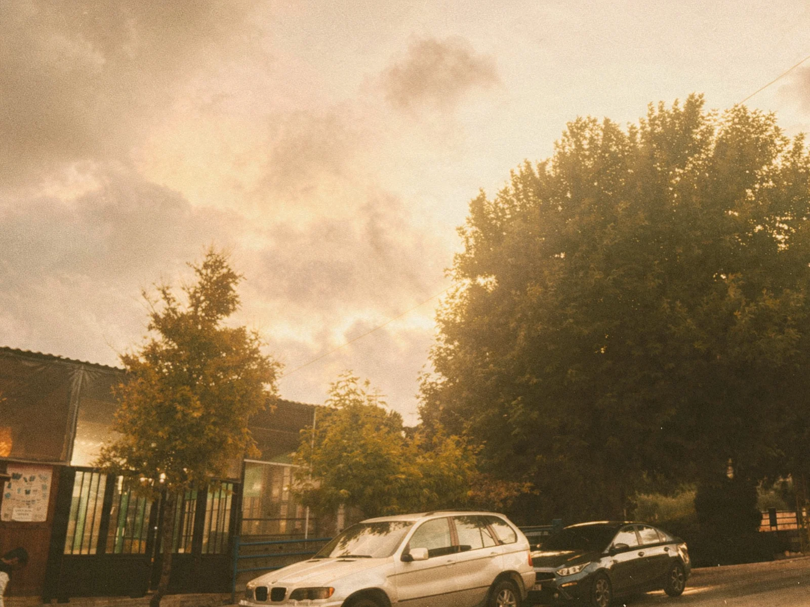
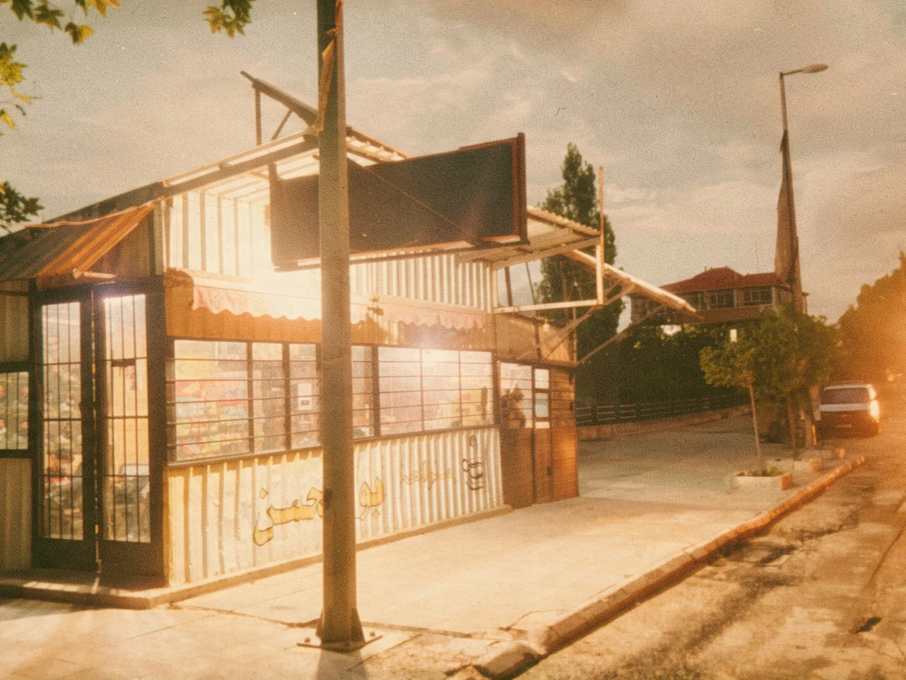

Announcement
The municipality launches its official website
Services, office hours, emergency numbers and town news are now available in one place, on phone, tablet and computer.
Ask a question about The municipality launches its official website →Official news, decisions and announcements from the municipality.
Announcement
Services, office hours, emergency numbers and town news are now available in one place, on phone, tablet and computer.
Ask a question about The municipality launches its official website →
Public works
Equipment has been checked and teams are ready to keep the main roads open during snowstorms this winter.
Ask a question about Winter readiness: snow-clearing teams on standby →
Projects
The solar station built in Chmustar generates electricity for the water pumps, reducing costs and power cuts.
Ask a question about Solar energy powers the town's water pumps →
Education
Drivers are asked to slow down near schools during morning and noon hours. Municipal police will help at busy crossings.
Ask a question about Back to school: road safety near schools →
Environment
Volunteers and municipal workers will clean public gardens and plant new trees. Residents are welcome to join.
Ask a question about Autumn clean-up campaign in public gardens →
Services
Residents and shop owners can pay their annual municipal fees at the municipality building during office hours.
Ask a question about Reminder: annual municipal fees →